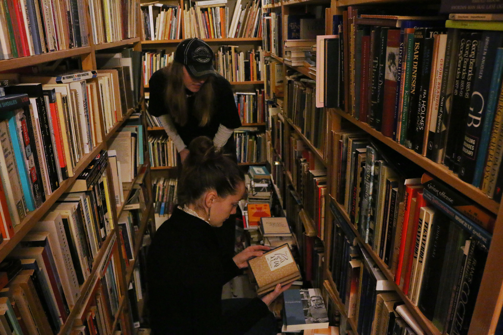
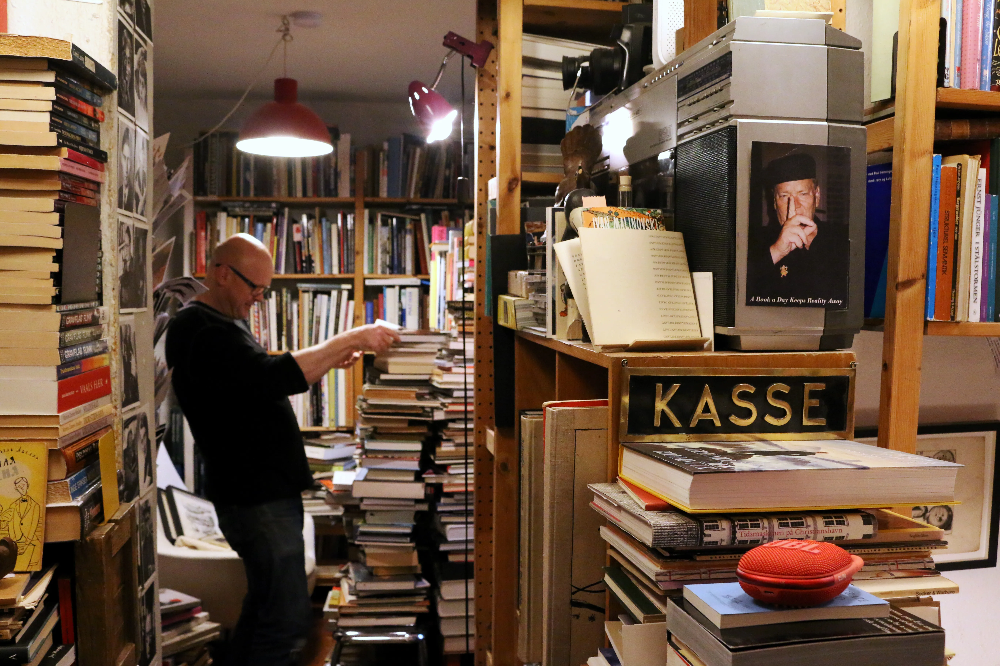
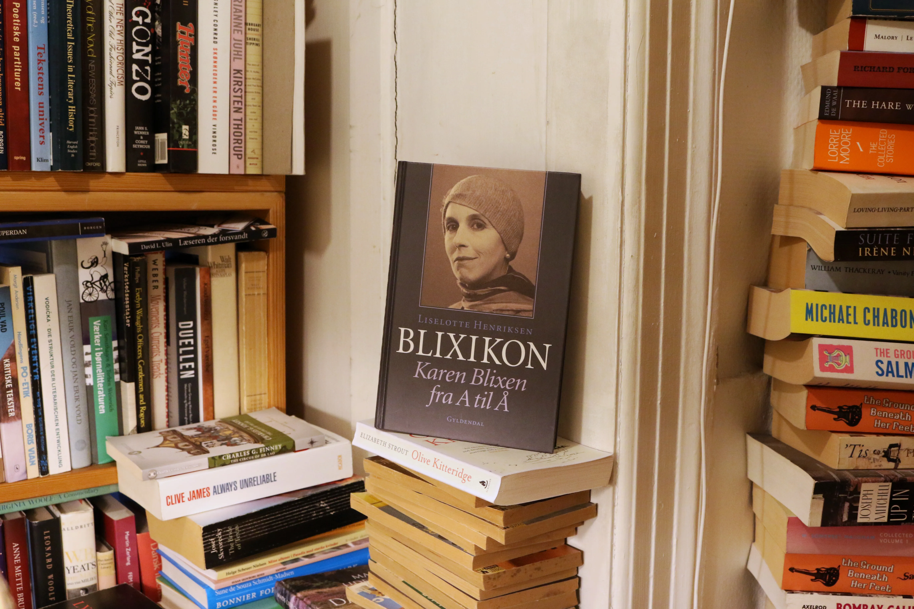
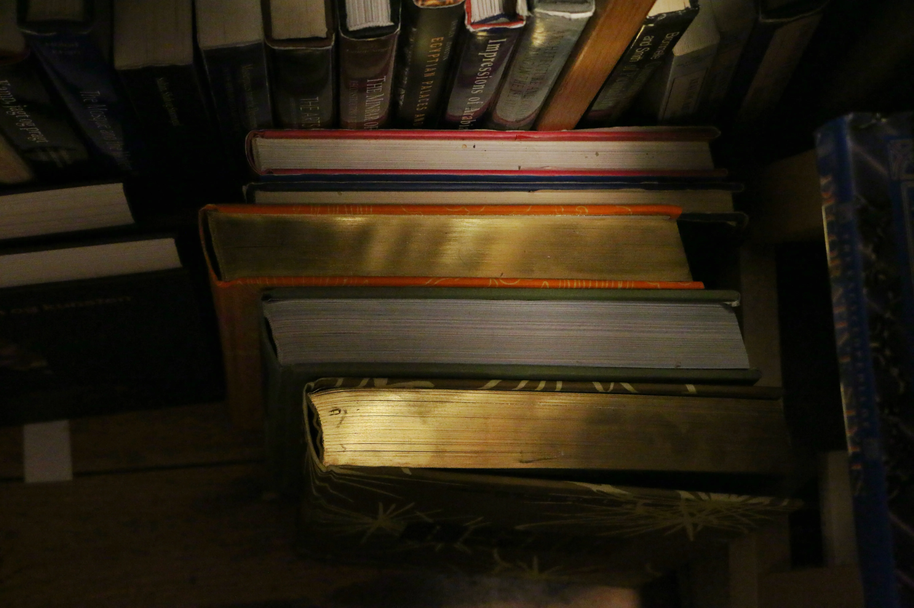

video
knap

Åbningstider
- Man - tirs
- Ons - fre
- Lør
- Søn

Gå på opdagelse
Hvem er Seier
Rasmus Seier købte først den ene halvdel af kælderen tilbage i 2006, og har sidenhen udvidet antikvariatet med nabokælderen. Rasmus er vokset op i en bog-gal familie, og Seiers Antikvariat er hans fuldtidsbeskæftigelse efter han sagde farvel til kokkefaget.


Dyk ned i forskellige genre
Gå på opdagelse i unikke værker og genrer, der inspirerer, udfordrer og åbner nye perspektiver. Her finder du bøger og skatte, der fortæller historier om menneskets skaberkraft, tanker og visioner gennem tiden.

Skjulte skatte
Blandt støvede hylder gemmer sig unikke bøger, sjældne værker og fortællinger, der venter på at blive genopdaget